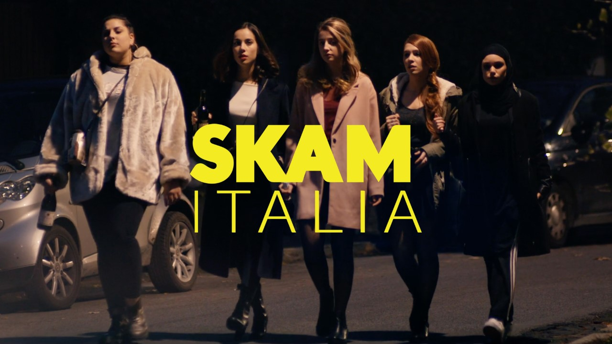

Skam Italia – адаптація норвезького серіалу для італійської молодіжної аудиторії. Прем’єра відбулася у 2018 році, і серіал швидко здобув популярність серед підлітків. Як і оригінал, він показує реалістичне життя школярів, їхні дружні та романтичні стосунки.
© 2025 SKAM Fan Site